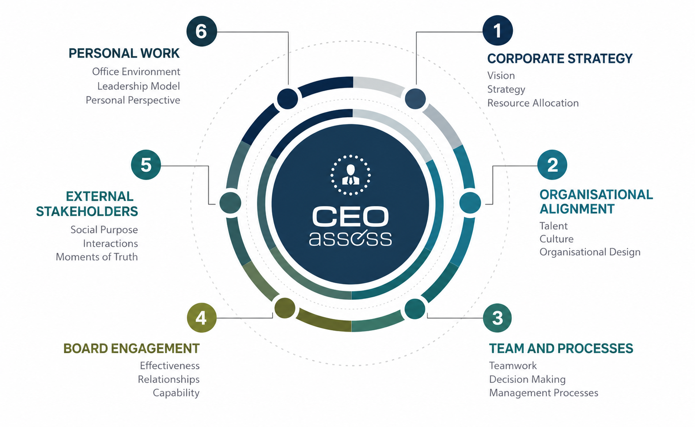

A clear, defensible appraisal
Blue Zoo provides a structured CEO Review process that gathers evidence from elected members and staff, reviews performance against agreed KPIs, benchmarks remuneration, and delivers a board-ready report the Council can act on with confidence.
As mandated within the Local Government Act 1995 (section 5.38), {LGA Name} is required to conduct an annual performance review of the Chief Executive Officer. For the purposes of this annual review, Blue Zoo offers a suitably qualified external consultant to undertake the performance evaluation process of the Chief Executive Officer.
The relationship between a Council and its CEO is fundamental to the successful delivery of the Local Government's Strategic Community Plan (SCP). The relationship provides the bridge between the SCP and the Corporate Business Plan (CBP) and its supporting Integrated Planning and Reporting Framework (IPRF) documents, taking them from paper to community value.
In addition to ‘good practice’, Local Governments have a requirement to carry out CEO reviews on an annual basis, and setting clear objectives and goals is critical to success. These goals, and effective evaluation of CEO performance and expectations, help to mitigate the risk of CEO turnover and avoid disruption and potential non-compliance for the local government. Using an external and suitably qualified evaluator minimises the risk of governance issues that may generate adverse public relations outcomes for the local government.
Blue Zoo will ensure that the CEO review process is conducted in accordance with the existing policies and standards for CEO performance appraisal, whilst ensuring alignment with the Department of Local Government, Industry Regulation, and Safety (DLGIRS) framework and guidelines for CEO performance appraisals.
The Blue Zoo approach to KPI development has been acknowledged by many local governments as a clear and pragmatic framework that provides direct linkage between the intent of Council and the activities of its CEO, whilst maintaining full alignment with the SCP/CBP and all regulatory obligations.
By engaging Blue Zoo, {LGA Name} will access significant experience developed when undertaking similar work for Bands 1 to 4 Local Governments, and Blue Zoo looks forward to working with {LGA Name} for this engagement.
- CEO performance review against current KPIs
- Total Remuneration Package review & benchmarking
- Development of KPIs for the coming year
- Elected member and staff evidence surveys
- Draft report for Mayor, Dep Mayor & CEO comment
- Final appraisal report, evidence-based
- Remuneration recommendation
- Report referred to Governance for the next agenda
CEO performance appraisal — methodology
Blue Zoo follows a best-practice model for the review of a Chief Executive that has been refined throughout decades of professional practice and many reviews of both Government and Corporate CEOs. It is designed to yield a fair and balanced perspective on the performance of a CEO. A defined seventeen-step process runs from the initial meeting through evidence gathering, analysis and drafting, to the report being referred to Governance for the next Council agenda.
The 17-step CEO appraisal, in detail
Each step expands the four-phase flow into the specific actions Blue Zoo performs, the stakeholders involved and the evidence produced. Please read Mayor and Shire President interchangeably.
Total remuneration package review — methodology
A twelve-step review anchors the CEO’s total remuneration package (TRP) to the Salaries and Allowances Tribunal (SAT) determination — establishing the applicable band, analysing every component of the package, benchmarking for competitiveness, and recommending any adjustments for Council’s consideration.
1 · Review the current SAT Determination. Blue Zoo begins with the current Salaries and Allowances Tribunal (SAT) Determination, which sets the regulatory framework for WA local-government CEO remuneration — the bands and the permissible package components. Reviewing the latest Determination keeps the review compliant, current and flexible enough to reflect any discretionary allowances the framework permits.
2 · Confirm the Town’s classification. The classification — based on population, area, complexity and budget — dictates the applicable band. Blue Zoo verifies the LGA's classification against the SAT criteria and current organisational context, establishing the correct benchmark and avoiding non-compliance or an inappropriate TRP.
3 · Detail the current package. Blue Zoo breaks the TRP into every component — base salary, superannuation, allowances, fringe and non-monetary benefits, entitlements and one-off payments — testing each for SAT compliance and value, and comparing against best practice to surface gaps.
4 · Compare TRP to the band. The package is measured against the band’s minimum and maximum. Where it sits above, Blue Zoo tests whether exceptional circumstances justify it; where below, whether an adjustment is needed to attract and retain talent — also checking the balance between salary, allowances and benefits.
5 · Analyse each component. Every element is assessed for relevance, fairness and alignment with organisational goals — allowances for necessity, benefits for their contribution to leadership and strategy — against SAT limits and market benchmarks.
6 · Review SAT discretionary commentary. Blue Zoo reviews SAT guidance on discretionary allowances and exceptional circumstances — unique challenges or major projects — ensuring any deviation from the band is defensible, transparent and compliant.
7 · Assess market competitiveness. The TRP is benchmarked against comparable councils in the same band and profile, factoring in cost of living and candidate availability, to confirm it is fair, competitive and justifiable to Council and community.
8 · Consider performance outcomes. Blue Zoo reviews the CEO’s progress against KPIs and strategic objectives, ensuring the TRP reflects achievements and that any performance-linked components align with Council priorities and incentivise future success.
9 · Consult with Council. Structured discussions — supported by benchmarking data, SAT guidelines and the TRP breakdown — capture Council’s priorities and feedback, building consensus and transparency around the review.
10 · Gather CEO input. Blue Zoo consults the CEO on the adequacy of each component and any expectations, providing context that, alongside benchmarking and Council priorities, ensures balanced recommendations.
11 · Document findings. A clear report records the full TRP breakdown, component analysis and comparisons against SAT guidelines and market benchmarks — with discrepancies, justifications and stakeholder feedback — giving Council a robust, transparent basis for decisions.
12 · Recommend adjustments if necessary. Blue Zoo provides clear, data-backed recommendations — salary, allowance or benefit changes — each with a rationale aligned to SAT guidelines, balancing operational needs with attracting and retaining strong leadership.
KPI development plan — methodology
A nine-step plan sets the KPIs for the year ahead — grounding them in the Town’s strategic and corporate plans, learning from the current cycle, designing measurable indicators tied to the CEO’s role, and securing Council endorsement and CEO agreement in line with DLGSC guidelines.
1 · Review SCP, CBP & annual budget. Blue Zoo reviews the LGA's key planning documents — the Strategic Community Plan, Corporate Business Plan and Annual Budget — which set the vision, priorities and resource envelope. KPIs are tied directly to this direction: infrastructure priorities become delivery, budget and satisfaction measures; engagement priorities become outreach and participation measures — keeping them relevant, actionable and within the LGA's capacity.
2 · Consider legislative requirements. KPIs are built to comply with the Local Government Act and related regulations and DLGIRS standards — covering governance, financial management, reporting and community consultation — so the CEO’s performance is evaluated within a legally robust, defensible framework.
3 · Engage with Council to understand objectives. Structured discussions capture Council’s priorities — infrastructure, financial management, sustainability, engagement — and document a shared view of what success looks like, so the KPIs are tailored to the Council's aspirations.
4 · Review current KPIs. Blue Zoo analyses historical data, outcomes and feedback to see which KPIs were specific, measurable and aligned. Effective ones are retained or refined; vague or misaligned ones are revised — e.g. an engagement KPI sharpened to attendance or satisfaction metrics.
5 · Incorporate lessons learned. Feedback from the annual performance review feeds the new framework — addressing barriers such as stakeholder communication and building on strengths such as project delivery — creating a continuous-improvement cycle that keeps KPIs dynamic and responsive.
6 · Define the scope of the new KPIs. Blue Zoo sets the CEO’s key areas of responsibility — infrastructure, financial sustainability, environmental initiatives, community engagement — with measurable benchmarks (timelines, budget adherence, cost savings) that are comprehensive, targeted and achievable within the LGA's resources.
7 · Ensure empirical measurability. Each KPI is defined by specific metrics, timelines and outcomes — “increase participation by 20%” rather than “improve engagement” — set at realistic yet challenging targets, so next year’s appraisal is transparent and objective.
8 · Secure Council endorsement. The finalised framework is presented to Council for review and endorsement, with questions and feedback addressed, so the KPIs carry the governing body’s full support as a clear performance benchmark.
9 · Confirm CEO agreement per DLGSC guidelines. Blue Zoo obtains the CEO’s formal agreement to the KPIs in line with DLGIRS guidelines, ensuring the expectations are fully understood with the opportunity to provide input or seek clarification.
CEOassess
Beyond the statutory review, Blue Zoo can apply CEOassess — a structured framework examining chief-executive performance across six connected dimensions. It gives Council a richer, evidence-based view of leadership, and the CEO a clear development picture, at no additional cost within this engagement.
The CEO can engage with the CEOassess system for the full review year using the detailed maturity models, and managing a structured improvement plan that adds to their professional capability.

Six connected dimensions of chief-executive performance
Our facilitators
Your engagement is led by senior practitioners with decades of Western Australian public-sector governance and executive-review experience — ensuring the process is credible, independent and defensible.
An accomplished executive with 30+ years transforming public- and private-sector organisations. Pat delivered whole-of-government initiatives for the Department of the Premier and Cabinet, led 300+ staff and the IT transformation at the Department of Communities (2017 MOG), and was previously a Director in Deloitte’s Consulting Practice. He is Deputy Chair of Volunteering WA.
A seasoned policy professional and executive with 30+ years in state and local government — most recently Assistant Director General, Policy and Strategy and Executive Director Housing and Homelessness at the Department of Communities. Scott has led organisation and operating-model reviews, MOG task forces, the planned amalgamation of Local Government Authorities, and the GROH Review and a successful Treasury business case (2023).
Chairman and director across corporate advisory, international property development, tourism, disability services, volunteering and arts management. Tony led Blue Zoo’s expansion into Singapore, Malaysia and India, delivered a multi-million-dollar infrastructure and services portfolio as a Government CEO, and has appeared before Federal and State Senate inquiries as an expert witness — authoring parliamentary submissions on regional economies, northern Australia, and foreign defence and trade.
A seasoned senior executive and company director with decades of experience across corporate, government and not-for-profit sectors in Australia, the U.S. and Asia. With deep operational and governance expertise, Alexis brings a well-rounded, strategic perspective and has guided multiple ASX-listed organisations through challenging periods — delivering stability, strategic direction and enduring value across diverse organisational contexts.
Twenty years in public sector advisory
Blue Zoo has advised federal, state and local government for more than twenty years. Our people have sat on both sides of the table — as advisors to boards and councils, and as the executives accountable for delivery. That combination is what allows us to conduct a CEO appraisal that is genuinely independent, yet grounded in the practical realities of running a local government.
A hand in the framework itself. Blue Zoo helped draft the WA Public Sector Governance Framework — the reference model many agencies and local governments now use to structure their own governance arrangements. We do not simply apply the framework; we helped write it, and we understand the intent behind each element, which matters when judging whether an organisation is genuinely well governed rather than merely compliant.
Executives, not only advisors. Several of our advisors have held senior executive roles — including Chief Executive Officer and Chief Information Officer positions in both State and Local Government. That experience means we understand the reality of the CEO’s role: competing pressures, political context, the weight of statutory accountability, and the difference between a defensible decision and a comfortable one. It also means the CEO is reviewed by people who have held the same accountability.
Breadth across the sector. Our work spans departments, statutory authorities, boards, commissions and local governments from Band 1 metropolitan cities to small regional shires — covering governance reviews, CEO appraisals, remuneration benchmarking, KPI development, risk and audit advisory, strategic planning and organisational resilience. Few advisors have worked across the full spread of scale and complexity that WA local government represents.
Non-executive perspective. Blue Zoo people have served as non-executive directors and audit and risk committee members across public, corporate and not-for-profit organisations, giving us a governing-body view of what Council actually needs from an appraisal: clarity, evidence, and a report that can be tabled, defended and acted on without further work.
Trusted with sensitive work. CEO appraisals are among the most sensitive engagements a council undertakes. Our advisors are experienced in handling confidential feedback from elected members and staff with discretion, managing the relationship dynamics involved, and presenting findings in a way that strengthens rather than strains the Council–CEO relationship.
Procurement-ready. We have been an active participant in Western Australian public sector procurement panels for close to two decades, and can be engaged directly through the State CUA for Audit Services — removing procurement friction and delay for the Council.
Methodology built from practice. Our CEO appraisal, remuneration and KPI methodologies have been refined across many engagements and are recognised by local governments as clear, pragmatic and directly linked to the SCP/CBP and regulatory obligations — not generic corporate templates applied to a public sector context. Each engagement improves the model that the next council benefits from.
Investment
| CEO performance appraisal fixed professional fee that includes one on-site attendance (usually to conduct a workshop or present to Council). | $9,180 |
| Additional onsite attendance (per hour, if requested) | $150 |
| All fees exclude GST. Fixed fee covers the full scope and all deliverables. |
Blue Zoo can be directly procured from the State CUA for Audit Services for this engagement.
Beyond the CEO appraisal, Blue Zoo can also conduct governance reviews, risk engagements — including business continuity planning and project risk reviews — and public sector managerial competency development. These can be quoted separately or bundled with this engagement.
"An independent, evidence-based appraisal gives the Council confidence its most important employment decision is made on facts, not impressions."
Accept and we begin
On acceptance, Blue Zoo will confirm the schedule with the Mayor and Deputy Mayor and issue the CEO's summary-report invitation to commence the process.